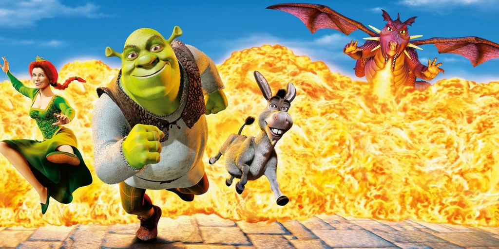

Shrek
By odzyskać swój dom, ogr z gadatliwym osłem wyruszają uwolnić menelice
Podstawowe informacje
| Tytuł polski |
Shrek |
| Tytuł angielski |
Shrek |
| Rok produkcji |
2001 |
| Reżyseria |
Andrew Adamson |
| Vicky Jenson |
| Scenariusz |
William Steig |
| Ted Elliott |
| Terry Rossio |
| Joe Stillman |
| Roger S. H. Schulman |
| Linki |
|
Opis fabuły
W bagnie żył olbrzym Shrek, którego cenna samotność została nagle zakłócona inwazją dokuczliwych postaci z bajek. Ślepe myszki buszują w zapasach olbrzyma, zły wilk sypia w jego łóżku, a trzy świnki buszują po jego samotni. Wszystkie te postaci zostały wypędzone ze swego królestwa przez złego Lorda Farquaada.
Zdecydowany ocalić ich dom - nie mówiąc już o swoim - Shrek porozumiewa się z Farquaadem i wyrusza na ratunek pięknej księżniczce Fionie, która ma zostać żoną Lorda. W misji towarzyszy mu przemądrzały Osioł, który zrobi dla Shreka wszystko z wyjątkiem... przestania mielenia ozorem. Ocalenie księżniczki przed ziejącym ogniem smokiem okazuje się być najmniejszym problemem przyjaciół, kiedy to zostaje odkryty głęboko skrywany, mroczny sekret Fiony.
Role w filmie
| Role w filmie |
- Shrek
- Mike Myers
- Donkey
- Eddie Murphy
- Princess Fiona
- Camreon Diaz
- Lord Farquaad
- John Lithgow
|
Zdjęcia z filmu